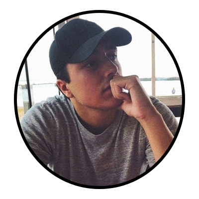

David Westlund
About me
Hello! My name is David Westlund. I'm 26 years old and I live and study in Jönköping. I was born in Stockholm, but me and my family moved up north to a small place called Åre when I was 6 years old. Most people know Åre because it's a popular ski resort.
Why NMD?
I started studying at JU in 2019. But back then I was enrolled in the DMP program. I quit DMP last year and started at NMD this fall. NMD fits me way better because I like to be creative and see what I do. And I also like to code so it's a perfect match!
My hobbies
In my spare time I like to do several things. I've played ice hockey since I was about 7 years old, so sometimes I play with JU hockey. I really like to watch football. My teams are Djurgården and Liverpool. I love movies and going to the cinema. I also make music on my computer.